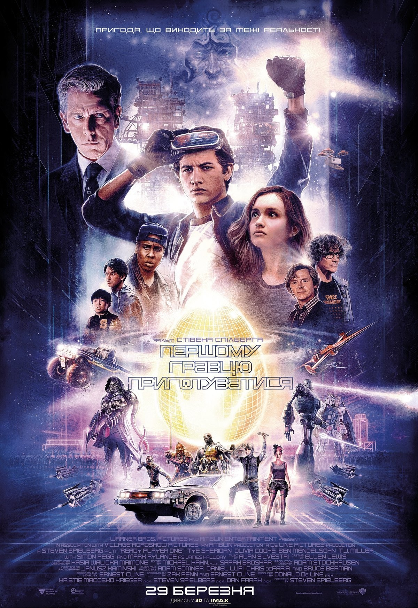

«Першому гравцю приготуватися» (англ. Ready Player One) — американський науково-фантастичний пригодницький фільм, знятий Стівеном Спілбергом за однойменним романом Ернеста Клайна. Прем'єра стрічки в Україні відбулася 29 березня 2018 року.
У 2045 році людство змирилося з перенаселенням та нерівністю між багатими й бідними. Все, чого не вистачає в реальності, можна отримати в «Оазі» — віртуальному світі від компанії Gregarious, де кожен обирає собі аватар і займається чим забажає. Творець «Оази» Джеймс Голлідей перед смертю лишив у віртуальності різноманітні артефакти, що дають незвичайні здібності. Найцінніший з них — «Великоднє яйце», власник якого успадкує акції Gregarious і стане власником «Оази». Підліток Вейд Воттс живе в місті Колумбус із тіткою Еліс і мріє знайти «Великоднє яйце». Вільний час він проводить в «Оазі» під ім'ям Персіваль і навіть свого найкращого друга на прізвисько Ейч ніколи не бачив особисто. Компанія IOI, очолювана Ноланом Сорендо, колишнім партнером Голлідея, цілеспрямовано шукає підказки до скарбу. Вона зобов'язує своїх боржників працювати на неї в «Оазі» в образі агентів «шісток». Персіваль з Ейчем бере участь у перегонах, на яких серед учасників упізнає стрімерку Артеміду. Він рятує її від Кінг-Конга. Ейч, що підпрацьовує в «Оазі» моддером, допомагає полагодити мотоцикл Артеміди. Персіваль розуміє, що Артеміда, як і він, знається на культури 80-х, якою захоплювався Голлідей. Повернувшись в реальність, підліток виявляє, що коханець тітки, скориставшись його старими рукавичками для гри в «Оазі», програв величезну суму. Переглядаючи загальнодоступний журнал Голлідея, Воттс дослухається до слів Артеміди, що в «Оазі» немає правил. На наступних перегонах він їде назад і зустрічає втілення Голлідея, Анорака Всевидця, що дає йому Мідний ключ, перший з трьох, який веде до скарбу. За це він отримує і винагороду та стає знаменитим. Він купує рідкісні артефакти й новий костюм для гри в «Оазі». Ейч, Артеміда та їхні друзі Шо і Дайто також знаходять Мідні ключі, очолюючи турнірну таблицю. Нолан Сорендо береться завадити Вейду відшукати решту підказок. Персіваль вирушає з Артемідою на танці в «Оазі» до клубу «Несамовита куля». Ейч застерігає, що вона може бути в реальності зовсім іншою людиною, можливо навіть агентом IOI. Як думає Артеміда, саме там знаходиться другий ключ, на що вказує згадка Голлідея про його кохану Кіру, подругу його партнера Морроу, з якою він там був на побаченні. Персіваль освідчується Артеміді в коханні, називаючи своє реальне ім'я. Агент IOI Айрок чує це та насилає на клуб «шісток» аби вбити Персіваля і тоді він втратить усі здобутки в «Оазі». Персіваль ледь не гине, але користується артефактом, який відмотує час назад. Артеміда дорікає йому, що той забув про реальне життя, яке залежить від того, хто знайде скарб. Айрок визначає, що Персіваль — це Вейд Воттс і доповідає про це Нолану.
У реальному світі Соррендо намагається підкупити Вейда величезними багатствами в обмін на роботу на його компанію. Коли той відмовляється, влаштовує теракт. Тітка Вейда і її коханець гинуть, а Вейд рятується завдяки невідомому бійцеві, який доставляє його в притулок Артеміди. Насправді її звуть Саманта Кук, вона повідомляє Воттсу, що служить Опору, який прагне звільнити «шісток» від боргів. Саманта вважає, що в неї не може бути стосунків з Вейдом, адже вона має на обличчі велику родиму пляму. Проте бажання знайди «великоднє яйце» об'єднує їх. Персіваль з Артемідою і друзями розшукують фільм, на який Голлідей з Кірою так і не пішли. Куратор журналу Голлідея дає Персівалю за правильну здогадку монету. Вони вирушають всередину фільму жахів «Сяйво». Артеміда завдяки Ейчу знаходить фото Кіри, що веде на бал, де знаходиться Нефритовий ключ. Третій ключ, згідно підказки, знаходиться в Сумному замку Анорака на планеті нескінченних боїв Дум. IOI захищає прохід до замку, а Айрок, створює непробивне силове поле. Бійці IOI нападають в реальному світі на притулок Опору і захоплюють Саманту. Її доставляють в боргову в'язницю і відправляють на віртуальні примусові роботи відпрацювати борг її померлого батька. З іншими «шістками» вона мусить забезпечити проходження гри Adventure для Atari 2600, що відкриє шлях до нагороди. Друзі Вейда розшукують його в реальності. Виявляється, Шо 11 років, Дайто ледь старший, а Ейч — дівчина. Вони вирушають на порятунок Саманти, входчи в «Оазу» в фургоні. Вони зламують систему IOI, змушуючи Нолана повірити, що він в реальності. Вейд погрожує йому пістолетом і той видає де Саманта. Він розповідає Саманті як утекти та звертається до всіх користувачів «Оази», викриваючи Нолана. Він закликає усіх вирушити на планету Дум і взяти замок штурмом. Тим часом Нолан розуміє, що його обдурили. IOI все не вдається вирішити загадку Голлідея. Саманта входить у віртуальність та опиняється всередині замку, де деактивовує щит. Величезна армія гравців атакує Сумний замок, який обороняють аватари IOI. Соррендо виходить на бій, керуючи Мехаґодзіллою (величезний ґодзіллоподібний робот), якого Артеміда знищує завдяки друзям. Персіваль з Шо дістаються до замку, та Айрок підриває перед ними міст. Ейч використовує створеного власноруч Сталевого гіганта, щоб створити переправу. Персіваль застрелює Артеміду, щоб Саманта могла втекти з IOI. Воттс із Шо дістаються до місця, де останній з «шісток» виграє Adventure, але не отримує скарбу. Персіваль здогадується — потрібно не пройти гру, а знайти в ній перше в світі «великоднє яйце». Та в цю мить його знаходить Нолан і Айрок, котрі востаннє пропонують служити IOI. Соррендо активує артефакт, що вбиває всіх аватарів на планеті, однак Персіваль єдиний виживає, оскільки володіє монетою, що дає додаткове життя. Підліток майже знаходить «великоднє яйце», а його друзі підбирають на вулицях Саманту. Анорак вручає Персівалю Кристальний ключ, в цей час IOI переслідують фургон Опору. Перед Персівалем виникає скриня, в яку він вставляє всі три ключі та опиняється в кімнаті з сяйливим яйцем. Перед ним постає копія Голлідея і показує кнопку, що здатна знищити всю «Оазу» раз і назавжди. Він говорить, що справжня цінність — це реальне життя, яким би воно не було. Нолан наздоганяє Вейда, попри натовп гравців навколо, але бачить, що програв. Прибуває поліція та арештовує його. Вейд освідчується Саманті в коханні в реальності. Прибуває глава Gregarious Морроу та отримує підпис Вейда, чим передає йому багатства і владу над віртуальним світом. Воттс ділить владу над «Оазою» між собою і друзями та забороняє використовувати віртуальність для відпрацювання боргів. Вони постановляють двічі на тиждень вимикати «Оазу», щоб люди цінували реальне життя.